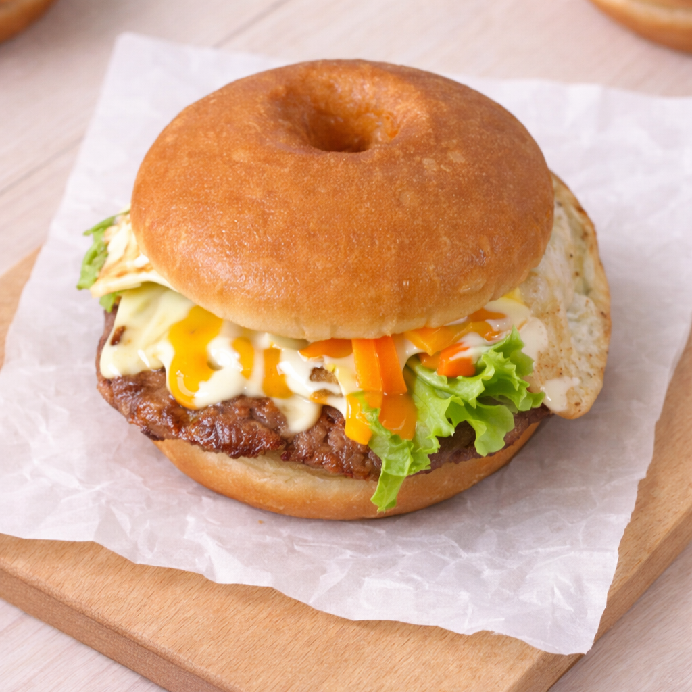

Liên hệ đặt bánh 079.677.890

45,000đ
Ghi chú:
Mô tả
Burnut: Burnut là một món bánh mặn độc đáo, kết hợp giữa bánh donut và burger, vì vậy đôi khi còn được gọi là burger donut. Thay vì sử dụng bánh mì burger thông thường, món này dùng bánh donut mềm xốp làm phần vỏ, tạo nên hương vị mới lạ và hấp dẫn. Bên trong bánh thường có thịt bò nướng hoặc thịt nguội, trứng ốp la, phô mai, rau xà lách, và sốt mayonnaise hoặc sốt đặc biệt. Sự kết hợp giữa vị béo của phô mai, vị đậm đà của thịt, vị mềm của bánh donut và độ tươi của rau tạo nên một món ăn vừa lạ vừa ngon. Burnut thường được dùng làm bữa sáng nhanh, bữa ăn nhẹ hoặc món ăn tiện lợi. Nhờ kích thước vừa phải và đầy đủ dinh dưỡng từ thịt, trứng và rau, món bánh này cung cấp năng lượng khá tốt cho một bữa ăn nhanh.
Thành phần: Bánh donut, thịt bò hoặc thịt nguội, trứng gà, phô mai, xà lách, cà rốt, sốt mayonnaise hoặc sốt đặc biệt.
Khối lượng: 150-200g / 1 bánh.
Phù hợp: 1 bánh / 1 người ăn.
Hạn sử dụng: Trong ngày để đảm bảo độ tươi của bánh và nhân.
Hướng dẫn bảo quản: Nếu chưa ăn ngay, nên bảo quản trong hộp kín ở ngăn mát tủ lạnh. Khi ăn có thể làm nóng nhẹ bằng lò vi sóng hoặc lò nướng để bánh mềm và thơm hơn. 🍔🍩